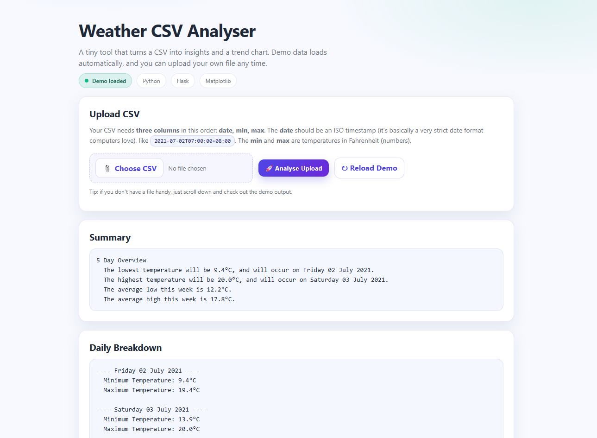

Read and validate
Accept a CSV upload with date, minimum and maximum temperature columns. Parse the data and surface validation warnings.
Python · Flask · Matplotlib
Turning a weather data file into useful summaries, daily reports and temperature trends.
A learning project demonstrating file uploads, data validation, temperature conversion and chart generation.
The hosted Flask app runs on Render’s free tier. After inactivity, it may take 60–90 seconds or longer to start. This overview and screenshot are available without waiting for the app.

Accept a CSV upload with date, minimum and maximum temperature columns. Parse the data and surface validation warnings.
Convert Fahrenheit to Celsius, calculate minimums, maximums and averages, and generate a Matplotlib trend chart.
Connecting a Flask request to a data-processing pipeline, then returning both useful text and a dynamically generated chart. The project also gave me practical experience deploying Python with Gunicorn.
Back to projects